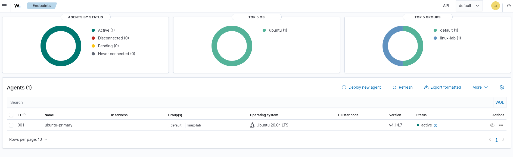
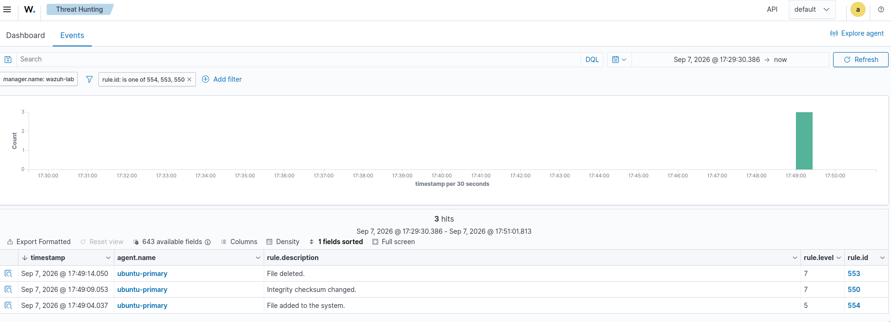

Security Infrastructure Intern candidateCandidato a Security Infrastructure Intern
Software Engineering student at UPC (top fifth, GPA 17.02/20) focused on defensive and infrastructure security. I build and operate a Wazuh SIEM lab, triage alerts, document findings, and manage access with Active Directory and Microsoft Entra ID.Estudiante de Ingeniería de Software en la UPC (quinto superior, promedio 17.02/20) enfocado en seguridad defensiva y de infraestructura. Construyo y opero un laboratorio SIEM con Wazuh, analizo alertas, documento hallazgos y gestiono accesos con Active Directory y Microsoft Entra ID.
Expected graduation: July 2027Egreso esperado: julio 2027
01Home SOC Lab with WazuhHome SOC Lab con Wazuh
A defensive, authorized lab on my own hardware and private network. It centralizes endpoint telemetry, and I use it to practice the daily SOC loop: detect, triage, investigate, document. No attacks against third parties, no corporate data.Un laboratorio defensivo y autorizado, en mi propio hardware y red privada. Centraliza la telemetría de un endpoint y lo uso para practicar el ciclo diario de un SOC: detectar, clasificar, investigar y documentar. Sin ataques a terceros ni datos corporativos.
Hardened with UFW restricted to the lab LAN, HTTPS dashboard, rotated initial credentials. A Windows endpoint is planned for when I have a suitable host.Endurecido con UFW limitado a la LAN del lab, dashboard por HTTPS y credenciales iniciales rotadas. Un endpoint Windows está planificado para cuando tenga un host adecuado.

Agent ubuntu-primary active (sanitized). Click to enlarge.Agente ubuntu-primary activo (sanitizado). Clic para ampliar.
Detection casesCasos de detección
ID
SignalSeñal
RuleRegla
MITRE ATT&CK
OutcomeResultado
DET-001
File created, modified, deleted in an isolated FIM directoryArchivo creado, modificado y borrado en un directorio FIM aislado
554550553
T1565.001T1070.004T1485
Closed, authorized testCerrado, prueba autorizada
DET-002
SSH attempt with a non-existent userIntento SSH con usuario inexistente
5710
None assigned (single attempt is not brute force)Ninguna (un intento único no es fuerza bruta)
Closed, authorized testCerrado, prueba autorizada
DET-003
Controlled command run with sudoComando controlado con sudo
5402
T1548.003
Closed, authorized testCerrado, prueba autorizada
Each case has a reproducible procedure and a sanitized incident report that states what would change the verdict outside a lab (source, frequency, repeated attempts, later successful logins). A rule firing is a lead to investigate, not proof of malicious activity.Cada caso tiene un procedimiento reproducible y un reporte de incidente sanitizado que indica qué cambiaría el veredicto fuera de un lab (origen, frecuencia, intentos repetidos, accesos exitosos posteriores). Una regla disparada es una pista a investigar, no prueba de actividad maliciosa.

DET-001 · FIM · 554 → 550 → 553Click to enlarge.Clic para ampliar.
Includes runbooks (install, recovery, network startup), decision records, and a dependency-free Python script that turns sanitized detection data into a Markdown summary. The repository documentation is written in Spanish.Incluye runbooks (instalación, recuperación, orden de arranque), registro de decisiones y un script en Python sin dependencias que convierte datos sanitizados de detecciones en un resumen Markdown.
Currently buildingEn construcción
NextSiguiente
Phase 3 · SSH brute force, end to endFase 3 · Fuerza bruta SSH, de punta a punta
Simulate repeated failed logins against my own endpoint, investigate it as a real incident (timeline, source, any successful login), write a custom Wazuh rule, and test Active Response to block the source. Documented before and after.Simular intentos fallidos repetidos contra mi propio endpoint, investigarlo como un incidente real (línea de tiempo, origen, algún login exitoso), escribir una regla personalizada de Wazuh y probar Active Response para bloquear el origen. Documentado antes y después.
Wazuh rulesActive ResponseIncident report
NextSiguiente
Hardening and vulnerability triage, measuredHardening y triage de vulnerabilidades, medido
Baseline the endpoint with Lynis and Wazuh SCA (CIS benchmark), apply fixes, re-measure. Prioritize real CVEs from Wazuh vulnerability detection by CVSS and context.Línea base del endpoint con Lynis y Wazuh SCA (benchmark CIS), aplicar correcciones y volver a medir. Priorizar CVEs reales de la detección de vulnerabilidades de Wazuh según CVSS y contexto.
LynisCISWazuh SCACVSS
PlannedPlanificado
Windows and Active Directory identity labLab de identidad con Windows y Active Directory
Windows endpoint with Sysmon and the Wazuh agent, plus a small AD: alerts on logons, group membership changes and privileged accounts. Waiting on a host with enough resources.Endpoint Windows con Sysmon y el agente de Wazuh, más un AD pequeño: alertas de inicios de sesión, cambios de grupos y cuentas privilegiadas. A la espera de un host con recursos suficientes.
SysmonActive DirectoryWindows
02ExperienceExperiencia
International Potato Center (CIP)
Helpdesk and Support Intern · Lima, Perú · Mar 2026 – Sep 2026Practicante de Helpdesk y Soporte · Lima, Perú · mar 2026 – sep 2026
Supported user accounts, permissions and access through Active Directory and Microsoft Entra ID.Apoyé la administración de cuentas, permisos y accesos con Active Directory y Microsoft Entra ID.
L1/L2 support: Windows, connectivity, corporate applications, hardware and device configuration.Soporte L1/L2: Windows, conectividad, aplicaciones corporativas, hardware y configuración de equipos.
Managed and documented incident tickets: diagnosis, actions taken, status and escalation.Gestioné y documenté tickets de incidentes: diagnóstico, acciones, estado y escalamiento.
Prepared corporate devices following IT guidelines and kept the asset inventory up to date.Preparé equipos corporativos según las guías de TI y mantuve actualizado el inventario de activos.
03More projectsMás proyectos
Helpdesk & IT Asset Management
Power Apps ticketing app, Power Automate notifications on new incidents and status changes, Power BI dashboard on SharePoint Lists (KPIs, categories, bottlenecks).App de tickets en Power Apps, notificaciones con Power Automate y dashboard Power BI sobre SharePoint Lists (KPIs, categorías, cuellos de botella).
Python ETL over 800 simulated support tickets: SLA, resolution time, escalations, reopenings and satisfaction, with SQL queries and visualizations.ETL en Python sobre 800 tickets simulados: SLA, tiempos de resolución, escalamientos, reaperturas y satisfacción, con consultas SQL y visualizaciones.
Cloud ETL pipeline: Python extraction, AWS S3 storage, Power BI churn KPIs.Pipeline ETL en la nube: extracción con Python, almacenamiento en AWS S3 y KPIs de fuga en Power BI.
Strategy game in vanilla JavaScript with Canvas API, ES6 modules and wave system.Juego de estrategia en JavaScript puro con Canvas API, módulos ES6 y sistema de oleadas.
Macquarie University · Excel Skills for Business: Advanced
SCRUMstudy · Scrum Fundamentals
Languages: Spanish (native), English (B2).Idiomas: español (nativo), inglés (B2).
05ContactContacto
I'm looking for a security or infrastructure security internship. The best way to reach me is email or LinkedIn.Busco una práctica en seguridad o seguridad de infraestructura. La mejor forma de contactarme es por correo o LinkedIn.